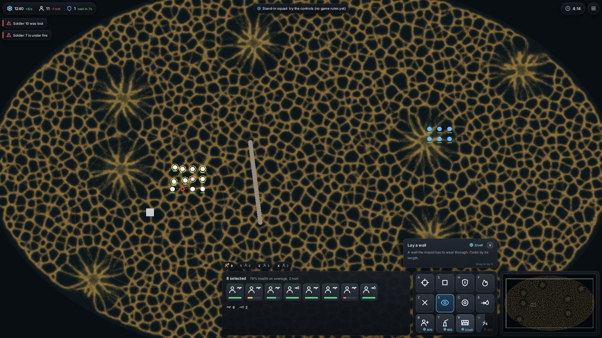
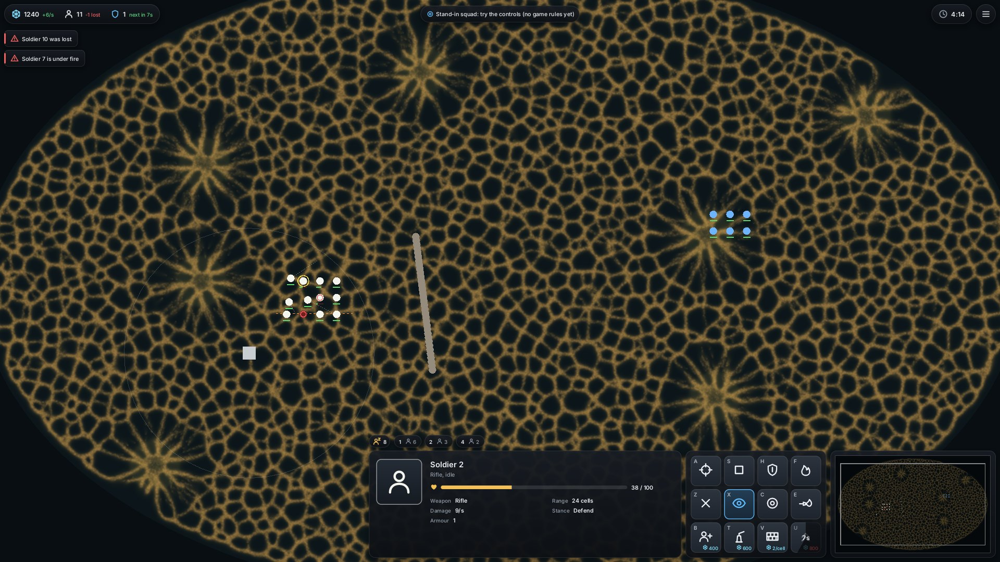
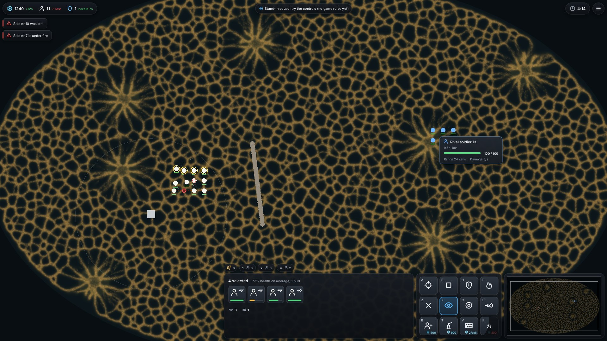
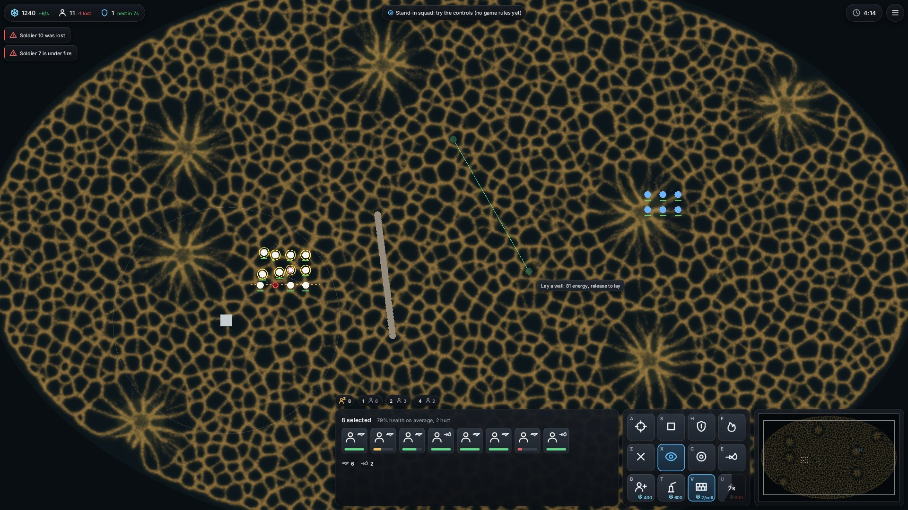
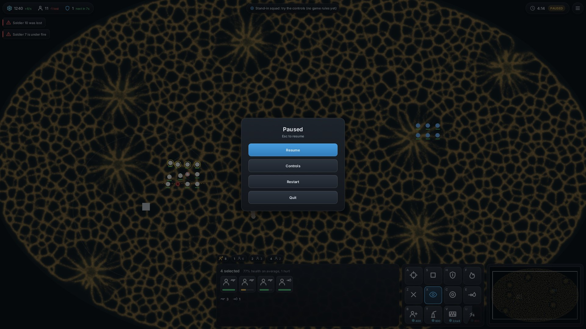
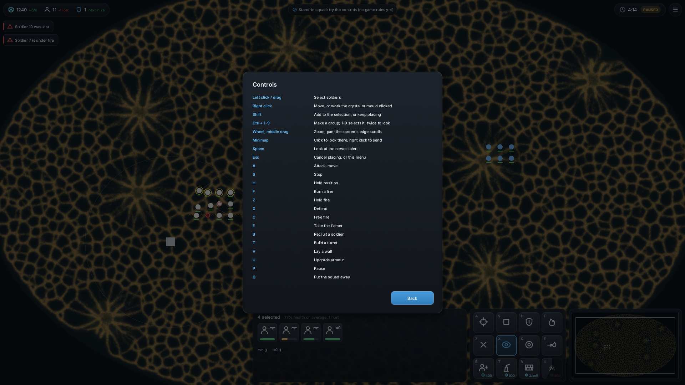

Soldier health and numbers, orders, weapons, upgrades, walls and turrets, enemy info, alerts, groups, a menu and an end screen, drawn by one GPU pass over the world view. The squad is still the stand-in: no game rules yet. Try it with cargo run --release --bin mouldgpu, then W, then Q.
GTX 1070, medians of 21 frames, on the fixed build. The UI pass is the canvas alone; the view is the world, the minimap and the unit marks under it (0.332 ms with the squad and no UI).
| State | Screen | UI shapes | View, GPU ms | UI pass, GPU ms | HUD layout, CPU ms | Bin and upload, CPU ms |
|---|---|---|---|---|---|---|
| Group selected | 1920 × 1080 | 373 | 0.294 | 0.099 | 0.081 | 0.048 |
| One soldier | 1920 × 1080 | 305 | 0.295 | 0.092 | 0.062 | 0.045 |
| Enemy under cursor | 1920 × 1080 | 336 | 0.295 | 0.097 | 0.068 | 0.047 |
| Laying a wall | 1920 × 1080 | 327 | 0.295 | 0.096 | 0.060 | 0.046 |
| Placing a turret | 1920 × 1080 | 336 | 0.295 | 0.096 | 0.061 | 0.046 |
| Menu open | 1920 × 1080 | 335 | 0.295 | 0.239 | 0.061 | 0.075 |
| Controls page | 1920 × 1080 | 746 | 0.295 | 0.269 | 0.147 | 0.099 |
| Group selected | 2560 × 1440 | 370 | 0.423 | 0.147 | 0.081 | 0.064 |
| Controls page | 2560 × 1440 | 743 | 0.423 | 0.447 | 0.148 | 0.141 |
In play the UI costs about 0.1 ms of GPU and 0.1 ms of CPU a frame. The paused menus cost more because the dim backdrop covers every tile. The same run found that one turret's range, drawn as a single 480-pixel ring mark, cost the view 0.7 ms (1.04 ms); drawn as 48 short line marks it is back to 0.295 ms.
Headless renders at 1920 × 1080 of a staged fight: two soldiers forward and hurt, one lost, a wall and a turret built, armour 1 with the next level 7 s away, groups 1, 2 and 4, two alerts.






An agent read the code and these pictures cold. It judged the approach sound and the look close to professional, and found input bugs a player would hit in the first minute. All of these are fixed, with 12 new tests:
Still open, from the review: command pages for when weapons and buildings outgrow the 4 × 3 card, selectable buildings, a production queue, Shift-queued moves and rally points, more bars in the info panel (shield, ammo, status), unit blips on the minimap, and a settings menu.